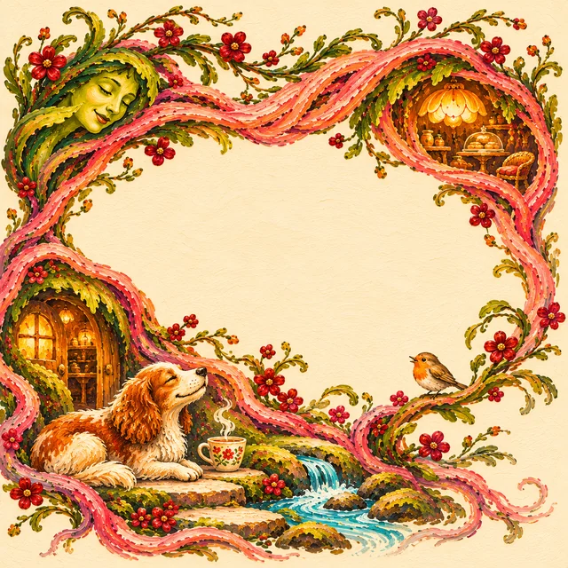
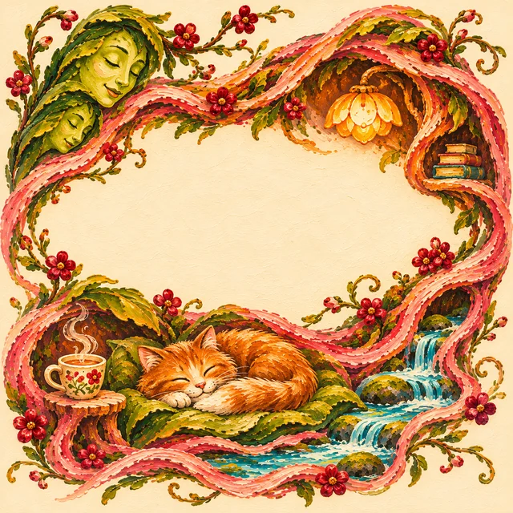
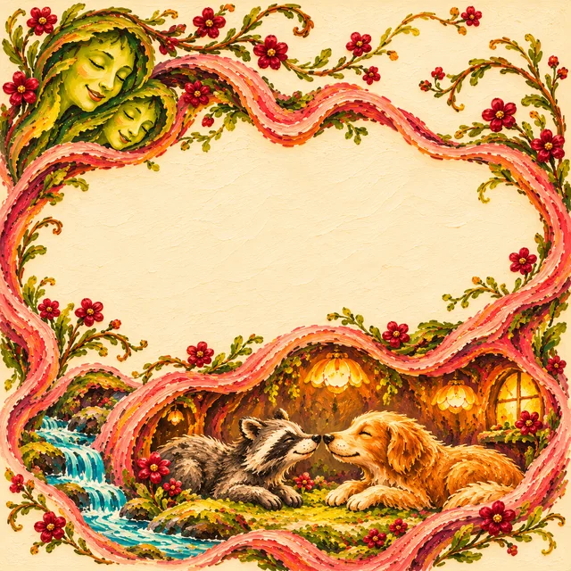

Restaurants · Hostels · Läden · Andere Orte
Eine offene Tür.
Ein vertrauter Ort.
Mehr Orte, an denen Tiere und Menschen willkommen sind.
Gastgebernetz im Aufbau
Ein Gespräch vorbereitenKlein anfangen
Was könnte bei euch möglich sein?
Gemeinsam herausfinden, was bei euch Platz hat. Ein Café, ein Hostel oder ein Laden hat andere Möglichkeiten. Wir suchen einen Rahmen, der zum Ort, seinen Menschen und den Tieren passt.

Willkommen sein
Ein Besuch mit dem eigenen Tier – mit klaren Angaben zu Bereichen, Zeiten und Bedingungen.

Zur Ruhe kommen
Ein geeigneter Platz zum Ausruhen, mit Abstand und Rückzug. Gemeinsam prüfen, ob und wie das vor Ort klappt.

Vertraut werden
Wiederkehrende Begegnungen oder ein kleines gemeinsames Treffen, wenn das für alle Beteiligten passt.
Eine Einladung zum Besuch sagt noch nichts über Betreuung aus. Soll ein Tier ohne seine Bezugsperson bleiben, braucht es dafür eine eigene, ausdrücklich vereinbarte Absprache.
Erst kennenlernen. Dann gemeinsam öffnen.
Von der Idee zum Ort
Wir beginnen mit Hunden. Weitere Haustiere können später mit ihren jeweiligen Bedürfnissen dazukommen.
- Das erste GesprächIdee vorstellen, Interesse klären und zuhören: Was wünscht sich der Ort selbst?
- Den Rahmen absprechenWelche Tiere, welche Bereiche, welche Zeiten? Ruhe, Erreichbarkeit, Zuständigkeiten und mögliche Kosten besprechen.
- Den Eintrag gemeinsam freigebenBeschreibung, Kontakt und Bedingungen mit dem Betrieb abstimmen. Erst danach kann ein bestätigter Gastgeber auf Website und Karte erscheinen.
Wir bereiten die ersten Gespräche vor. Es ist noch kein Betrieb als teilnehmender Gastgeber eingetragen.
Für den ersten Kontakt
Deine GesprächsnotizEine Idee mitnehmen.
Du kennst einen passenden Ort oder betreibst selbst einen? Halte fest, worüber ihr sprechen möchtet. Die Notiz wird hier an niemanden gesendet und meldet keinen Betrieb an.
Danach wächst das Netz
Ein vertrauter Ort mehr.
Für bestätigte Gastgeber bereiten wir später eigene Beschreibungen und die Verbindung zur gemeinsamen Karte vor. Öffentliche Treffpunkte kannst du schon jetzt entdecken.